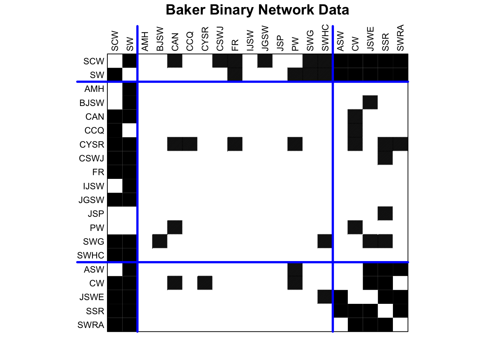
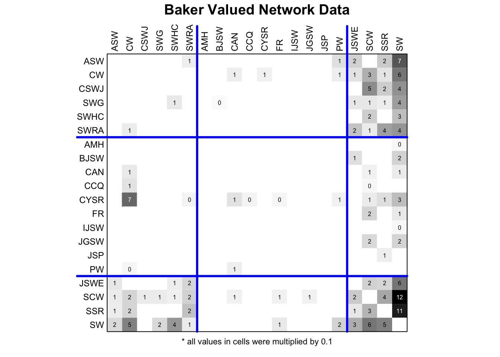

library(igraph)
library(networkdata)5 Cohesive Subgroups
5.1 Introduction
In this chapter, we explore cohesive subgroups within networks, focusing on cliques, community detection, blockmodeling, and core-periphery structures. Each concept offers a different way to examine how nodes cluster based on connectivity, from tightly-knit cliques, where every member is connected, to broader communities grouped by denser internal links. Blockmodeling abstracts these patterns into roles and relationships, while core-periphery structures reveal hierarchical organization with central and peripheral actors.
5.2 Cliques
A clique in a network is a set of nodes that form a complete subnetwork within a network (called a complete subgraph). A maximal clique is a clique that cannot be extended to a bigger clique by addding more nodes to it.
data("clique_graph")All maximal cliques can be calculated with max_cliques() (only feasible for fairly small networks). The min parameter can be used to set a minimum size. Here, we want to ignore all cliques of size \(2\).
# only return cliques with three or more nodes
cl <- max_cliques(clique_graph, min = 3)
cl[[1]]
+ 3/30 vertices, from 0193e05:
[1] 9 17 18
[[2]]
+ 3/30 vertices, from 0193e05:
[1] 7 4 5
[[3]]
+ 3/30 vertices, from 0193e05:
[1] 7 4 8
[[4]]
+ 3/30 vertices, from 0193e05:
[1] 10 2 11
[[5]]
+ 3/30 vertices, from 0193e05:
[1] 16 12 15
[[6]]
+ 3/30 vertices, from 0193e05:
[1] 6 1 5
[[7]]
+ 4/30 vertices, from 0193e05:
[1] 12 13 15 14
[[8]]
+ 3/30 vertices, from 0193e05:
[1] 12 2 1
[[9]]
+ 5/30 vertices, from 0193e05:
[1] 1 2 5 4 3The figure below shows the network and the found maximal cliques.

Related to cliques is the k-core decomposition of a network. A k-core is a subgraph in which every node has at least k neighbors within the subgraph. A k-core is thus a relaxed version of a clique.
The function coreness() can be used to calculate the k-core membership for each node.
kcore <- coreness(clique_graph)
kcore [1] 4 4 4 4 4 3 2 2 2 2 2 3 3 3 3 3 2 2 1 1 1 1 1 1 1 1 1 1 1 1
Cliques are the prototypical and most strict definition of a cohesive subgroup in a network. In empirical networks, however, we rarely encounter situations where we can partition the whole network into a set of cliques. The relaxed version of this problem is that of clustering, also referred to as comunity detection.
5.3 Comunity detection
A cluster is loosely defined as a group of nodes which are internally densely and externally sparsely connected. The network below shows an example for a network with a visible and intuitive cluster structure.
# labeL; clustered-graph
#| echo: FALSE
n1 <- 5
n2 <- 20
set.seed(1234)
g <- sample_islands(n1, n2, 0.9, 5)
g <- simplify(g)
V(g)$grp <- rep(LETTERS[1:n1], each = n2)
ggraph(g, "stress") +
geom_edge_link0(edge_linewidth = 0.2, edge_color = "grey66") +
geom_node_point(shape = 21, size = 5, aes(fill = grp), show.legend = FALSE) +
theme_void()
In contrast, the network below does not really seem to have any well defined cluster structure.

The following algorithms for graph clustering are implemented in igraph.
[1] "cluster_edge_betweenness" "cluster_fast_greedy"
[3] "cluster_fluid_communities" "cluster_infomap"
[5] "cluster_label_prop" "cluster_leading_eigen"
[7] "cluster_leiden" "cluster_louvain"
[9] "cluster_optimal" "cluster_spinglass"
[11] "cluster_walktrap" Most of these algorithms are based on “modularity maximization”. Modularity is defined as the fraction of edges that fall within given groups minus the expected fraction if edges were distributed at random.
The workflow of a cluster analysis is always the same, independent from the chosen method. We illustrate the workflow using the infamous karate club network.
data("karate")
# compute clustering
clu <- cluster_louvain(karate)
# cluster membership vector
mem <- membership(clu)
mem [1] 1 2 2 2 1 1 1 2 3 2 1 1 2 2 3 3 1 2 3 2 3 2 3 3 4 4 3 3 4 3 3 4 3 3# clusters as list
com <- communities(clu)
com$`1`
[1] 1 5 6 7 11 12 17
$`2`
[1] 2 3 4 8 10 13 14 18 20 22
$`3`
[1] 9 15 16 19 21 23 24 27 28 30 31 33 34
$`4`
[1] 25 26 29 32To compare the quality of clusterings, we can compute the modularity score for each output.
imc <- cluster_infomap(karate)
lec <- cluster_leading_eigen(karate)
loc <- cluster_louvain(karate)
sgc <- cluster_spinglass(karate)
wtc <- cluster_walktrap(karate)
scores <- c(
infomap = modularity(karate, membership(imc)),
eigen = modularity(karate, membership(lec)),
louvain = modularity(karate, membership(loc)),
spinglass = modularity(karate, membership(sgc)),
walk = modularity(karate, membership(wtc))
)
scores infomap eigen louvain spinglass walk
0.4020381 0.3934089 0.4151052 0.4197896 0.3532216 For the karate network, cluster_spinglass() produces the highest modularity score. The corresponding clustering is shown below.

Modularity maximization is still widely considered as the state-of-the-art clustering method for networks. There are, however, some technical shortcomings that one should be aware of. One of those is the so called “resolution limit”. When modularity is being maximized, it can happen that smaller clusters are merged together to form bigger clusters. The prime example is the graph that consists of cliques connected in a ring.
The figure below shows such a graph, consisting of 50 cliques of size 5.

Intuitively, any clustering method should return a cluster for each clique.
clu_louvain <- cluster_louvain(K50)
table(membership(clu_louvain))
1 2 3 4 5 6 7 8 9 10 11 12 13 14 15 16 17 18 19 20 21 22 23
15 10 10 10 10 15 10 10 10 10 10 15 10 10 10 10 10 10 10 10 15 10 10 A clustering algorithm that fixes this issue is the leiden algorithm.
clu_leiden <- cluster_leiden(K50, objective_function = "CPM", resolution_parameter = 0.5)Warning: The `resolution_parameter` argument of `cluster_leiden()` is deprecated as of
igraph 2.1.0.
ℹ Please use the `resolution` argument instead.table(membership(clu_leiden))
1 2 3 4 5 6 7 8 9 10 11 12 13 14 15 16 17 18 19 20 21 22 23 24 25 26
5 5 5 5 5 5 5 5 5 5 5 5 5 5 5 5 5 5 5 5 5 5 5 5 5 5
27 28 29 30 31 32 33 34 35 36 37 38 39 40 41 42 43 44 45 46 47 48 49 50
5 5 5 5 5 5 5 5 5 5 5 5 5 5 5 5 5 5 5 5 5 5 5 5 The figure below shows the clusters computed with the louvain method in grey and the leiden method in red.
Warning: Using `size` aesthetic for lines was deprecated in ggplot2 3.4.0.
ℹ Please use `linewidth` instead.Don't know how to automatically pick scale for object of type <membership>.
Defaulting to continuous.
Don't know how to automatically pick scale for object of type <membership>.
Defaulting to continuous.
If you are interested in the technical details of the Leiden method, check out the original paper.
The netUtils package includes the function sample_lfr() which implements the well-known Lancichinetti–Fortunato–Radicchi benchmark algorithm to generate artificial networks with a priori known communities and they can be used to compare different community detection methods.
5.4 Blockmodeling
Blockmodeling is a more formal approach that aims to simplify the network’s structure into blocks based on patterns of connections between nodes. Instead of focusing on the density of connections, it categorizes the relationships between different groups (or blocks) of nodes according to the roles they play in the network.
The goal is to reduce the complexity of the network by identifying roles and positions within the network, where nodes in the same block have similar patterns of connections to other blocks, rather than necessarily being densely connected to each other.
Blockmodeling involves partitioning the network into blocks and then modeling the connections between these blocks. It can be done through conventional (deterministic) or stochastic approaches, including k-block modeling and stochastic blockmodeling.
Blockmodeling is particularly useful in sociology for role analysis and in organizational studies, where it’s important to understand how different groups (e.g., departments, hierarchies) interact, regardless of the density of the connections within each group.
There are several packages that implement different kinds of (stochastic) blockmodels. The most basic approaches are implemented in the package blockmodeling.
library(blockmodeling)In principle, blockmodels can also be used for clustering, as we will illustrate on this random network with 3 dense blocks of size 20.

The disadvantage is that we need to specify a lot more parameters than for community detection.
A <- as_adj(g)Warning: `as_adj()` was deprecated in igraph 2.1.0.
ℹ Please use `as_adjacency_matrix()` instead.blk <- matrix(
c(
"com", "nul", "nul",
"nul", "com", "nul",
"nul", "nul", "com"
),
nrow = 3
)
blk [,1] [,2] [,3]
[1,] "com" "nul" "nul"
[2,] "nul" "com" "nul"
[3,] "nul" "nul" "com"res <- optRandomParC(
M = A, k = 3, approaches = "bin",
blocks = blk, rep = 5, mingr = 20, maxgr = 20
)
Starting optimization of the partiton 1 of 5 partitions.
Starting partition: 3 2 2 2 3 3 2 1 2 1 2 3 3 1 3 2 3 3 2 2 1 1 3 3 3 2 3 2 3 2 3 1 2 1 3 1 1 1 1 1 1 1 3 1 3 1 2 1 3 2 1 1 1 3 3 2 2 2 2 2
Final error: 342
Final partition: 3 3 3 3 3 3 3 3 3 3 3 3 3 3 3 3 3 3 3 3 1 1 1 1 1 1 1 1 1 1 1 1 1 1 1 1 1 1 1 1 2 2 2 2 2 2 2 2 2 2 2 2 2 2 2 2 2 2 2 2
Starting optimization of the partiton 2 of 5 partitions.
Starting partition: 1 1 2 1 3 1 1 1 1 2 3 2 1 1 3 1 3 2 1 3 2 2 3 1 3 3 2 2 2 3 1 1 2 3 1 3 1 3 2 2 3 1 2 1 3 1 3 3 2 2 3 2 3 2 2 2 1 3 2 3
Final error: 342
Final partition: 1 1 1 1 1 1 1 1 1 1 1 1 1 1 1 1 1 1 1 1 3 3 3 3 3 3 3 3 3 3 3 3 3 3 3 3 3 3 3 3 2 2 2 2 2 2 2 2 2 2 2 2 2 2 2 2 2 2 2 2
Starting optimization of the partiton 3 of 5 partitions.
Starting partition: 3 1 2 3 2 3 1 1 1 2 2 1 3 2 3 3 2 1 2 3 3 3 3 1 2 3 1 1 2 2 2 1 3 1 2 3 1 2 2 3 2 2 1 1 1 1 1 1 3 3 3 2 2 1 1 2 3 3 3 2
Final error: 342
Final partition: 1 1 1 1 1 1 1 1 1 1 1 1 1 1 1 1 1 1 1 1 2 2 2 2 2 2 2 2 2 2 2 2 2 2 2 2 2 2 2 2 3 3 3 3 3 3 3 3 3 3 3 3 3 3 3 3 3 3 3 3
Starting optimization of the partiton 4 of 5 partitions.
Starting partition: 1 3 3 1 3 3 3 2 1 2 1 3 2 3 3 1 2 3 1 1 2 3 2 2 1 2 1 1 2 1 3 2 2 1 2 2 3 3 2 3 1 3 3 2 3 1 3 1 1 2 1 1 3 2 1 3 2 2 1 2
Final error: 342
Final partition: 1 1 1 1 1 1 1 1 1 1 1 1 1 1 1 1 1 1 1 1 3 3 3 3 3 3 3 3 3 3 3 3 3 3 3 3 3 3 3 3 2 2 2 2 2 2 2 2 2 2 2 2 2 2 2 2 2 2 2 2
Starting optimization of the partiton 5 of 5 partitions.
Starting partition: 3 2 2 2 2 3 3 1 2 2 1 3 1 3 3 1 2 2 1 3 2 1 2 1 1 2 3 2 1 3 1 2 1 3 3 3 3 3 2 2 1 1 1 3 1 2 2 1 3 2 3 2 1 3 3 2 1 3 1 1
Final error: 342
Final partition: 2 2 2 2 2 2 2 2 2 2 2 2 2 2 2 2 2 2 2 2 1 1 1 1 1 1 1 1 1 1 1 1 1 1 1 1 1 1 1 1 3 3 3 3 3 3 3 3 3 3 3 3 3 3 3 3 3 3 3 3
Optimization of all partitions completed
All 5 solutions have err 342 k: number of blocks needs to be specified beforehandapproaches: defines the type of blockmodel approach to be used. “bin” is for binary and “val” for valued blockmodeling. There are several more possibilities available in the help of the functionblocks: allowed block types. Basically, what defines a block in the network. In our example we give a strict patterning that corresponds to a clustering. The diagonal blocks should be complete (“com”) and offdiagonals should be empty (“nul”). So in the best case, we have 3 disconnected cliques. Again, consult the help for more available block options.rep: number of random starting partitions to start the iteration frommingrandmaxgr: min and max size of the blocks.
the result can be accessed with clu.
clu(res) [1] 3 3 3 3 3 3 3 3 3 3 3 3 3 3 3 3 3 3 3 3 1 1 1 1 1 1 1 1 1 1 1 1 1 1 1 1 1 1
[39] 1 1 2 2 2 2 2 2 2 2 2 2 2 2 2 2 2 2 2 2 2 2Note that this type of Blockmodeling is computationally expensive and best suited for small networks.
Looking at a more realistic dataset, we load the baker dataset from the blockmodeling package. The dataset includes citation data between social work journals for 1985-86.
data("baker")
diag(baker) <- 0
plotMat(baker,
main = "Baker Network Data",
mar = c(1, 1, 3, 1), title.line = 2
)
First, we run a binary blockmodel. This time we increase the number of repetions to 1000 and instead of giving a lear block structure, we just specify, what type of blocks we want our result to include. How they are distributed, we do not care and let the algorithm decide. We run the optimization in parallel (nCores = 0), which requires the packages doParallel and doRNG to be installed.
baker_binary <- baker
baker_binary[baker_binary > 0] <- 1
res_baker_binary <- optRandomParC(
M = baker_binary, k = 3, rep = 1000,
nCores = 0, blocks = c("nul", "com"), approach = "bin"
)Loading required namespace: doParallelLoading required namespace: doRNG
Optimization of all partitions completed
1 solution(s) with minimal error = 47 found. The obtained optimal block structure can be accessed via IM.
IM(res_baker_binary) [,1] [,2] [,3]
[1,] "nul" "nul" "com"
[2,] "nul" "com" "com"
[3,] "nul" "com" "com"The resulting blocks can be visualized via the plot function.
plot(
res_baker_binary,
main = "Baker Binary Network Data",
mar = c(1, 2, 3, 1), title.line = 2
)
Now we run a valued blockmodel on the original data. The parameter preSpecM is set to the median of the non-zero entries and defines a kind of cutoff for when to consider a value high enough to be a block internal tie.
res_baker_valued <- optRandomParC(
M = baker, k = 3, rep = 1000,
preSpecM = 13, approach = "val", blocks = c("nul", "com"),
nCores = 0
)
Optimization of all partitions completed
1 solution(s) with minimal error = 626 found. IM(res_baker_valued) [,1] [,2] [,3]
[1,] "com" "nul" "com"
[2,] "nul" "nul" "nul"
[3,] "com" "nul" "nul"plot(
res_baker_valued,
main = "Baker Valued Network Data",
mar = c(1, 2, 3, 1), title.line = 2
)
5.5 Core-Periphery
Community detection aims to find clusters or groups of nodes within the network that are more densely connected to each other than to nodes outside the group. The core-periphery structure, in contrast, posits that a network is organized into a densely connected core and a sparsely connected periphery. The core consists of central nodes that are highly connected to each other and also to peripheral nodes. Peripheral nodes, on the other hand, have fewer connections and are mostly connected to nodes in the core rather than to each other.
the netutils package includes a function core_periphery() which allows to fit a discrete core-periphery model to a network.
library(netUtils)To illustrate the function, we construct a graph which has a perfect core-periphery structure, also known as a split graph.
set.seed(1234)
sg <- split_graph(n = 50, p = 0.35, core = 0.3)The created graph has 50 nodes and 30% of all nodes are in the core. The probability that a periphery node connects to a core node is 0.35.

Running the core_periphery() function on this idealized graph should give the optimal result.
core_periphery(sg)$vec
[1] 1 1 1 1 1 1 1 1 1 1 1 1 1 1 1 0 0 0 0 0 0 0 0 0 0 0 0 0 0 0 0 0 0 0 0 0 0 0
[39] 0 0 0 0 0 0 0 0 0 0 0 0
$corr
[1] 1The function returns a list with two entries. The first, vec, returns the membership of nodes. It is one if a node is in the core and 0 if not. The second entry corr is the correlation of the adjacency matrix with the ideal adjacency matrix given from the vec memberships. In this case, the correlation is one meaning that we have discovered the perfect core-periphery structure. In empirical applications, we rarely expect such a good fit.
The function also has an argument which allows to use different optimization techniques to find core-periphery structures (the problem of finding the optimal solution is too complex). For illustration, we rewire some edges of the graph sg to destroy the idealized structure and use all implemented optimization methods.
set.seed(45)
sg1 <- rewire(sg, each_edge(0.25))
core_periphery(sg1, method = "rk1_dc")$vec
[1] 1 1 1 1 1 1 1 1 1 1 1 1 1 1 1 0 0 1 0 0 0 0 0 0 0 0 0 0 0 0 0 0 0 0 0 0 0 0
[39] 0 0 0 0 0 0 0 0 0 0 0 0
$corr
[1] 0.6473649core_periphery(sg1, method = "rk1_ec")$vec
[1] 1 1 1 1 1 1 1 1 1 1 1 1 1 1 1 0 0 1 0 0 0 0 0 0 0 0 0 0 0 0 0 0 0 0 0 0 0 0
[39] 0 0 0 0 0 0 0 0 0 0 0 0
$corr
[1] 0.6473649core_periphery(sg1, method = "GA")$vec
[1] 1 1 1 1 1 1 1 1 1 1 1 1 1 1 1 0 0 1 0 0 0 0 0 0 0 0 0 0 0 0 0 0 0 0 0 0 0 0
[39] 0 0 0 0 0 0 0 0 0 0 0 0
$corr
[1] 0.6473649rk1_dc and rk1_ec are so called rank-one matix approximation methods which infer an idealized structure via the degrees and eigenvectors of the adjacency matrix. These methods are extremely fast but might result in a lower quality of the result compared to GA which runs a genetic algorithm.
There are several extensions to this simple discrete core-periphery model. An extension for weighted networks is implemented in the package ITNr.
5.6 Scientific Reading
Clauset, A.; Newman, M. E. J. & Moore, C. Finding community structure in very large networks, Physical Review E 2004, 70, 066111
Vincent D. Blondel, Jean-Loup Guillaume, Renaud Lambiotte, Etienne Lefebvre: Fast unfolding of communities in large networks. J. Stat. Mech. (2008) P10008
Traag, V. A., Waltman, L., & van Eck, N. J. (2019). From Louvain to Leiden: guaranteeing well-connected communities. Scientific reports, 9(1), 5233.
Žiberna, A. (2007). Generalized Blockmodeling of Valued Networks. Social Networks, 29(1), 105-126. doi: 10.1016/j.socnet.2006.04.002
Žiberna, A. (2008). Direct and indirect approaches to blockmodeling of valued networks in terms of regular equivalence. Journal of Mathematical Sociology, 32(1), 57-84. doi: 10.1080/00222500701790207
Žiberna, A. (2014). Blockmodeling of multilevel networks. Social Networks, 39(1), 46-61. doi: 10.1016/j.socnet.2014.04.002
Borgatti, Stephen P., and Martin G. Everett. “Models of core/periphery structures.” Social networks 21.4 (2000): 375-395.